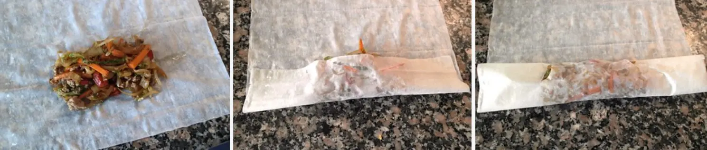

Cortamos las verduras en juliana y reservamos. En un wok, o en una sartén si no tuvierais, añadimos 3 cucharadas de aceite para freír. Cuando esté bien caliente agregamos la col y la cebolla. Rehogamos removiendo constantemente hasta que la verdura esté al dente. No debe quedar muy pochadita sino un poquito crujiente.
Cuando esté casi lista añadimos al wok una cucharada de salsa de soja y unas gotitas de aceite de sésamo. Removemos unos segundos y retiramos.
En el mismo wok volvemos a añadir un par de cucharadas de aceite para freír. Cuando esté caliente añadimos la zanahoria ya troceada y repetimos la operación. La cocinamos removiendo constantemente hasta que esté al dente, añadimos una cucharada de soja y un chorrito de aceite de sésamo, removemos y retiramos.
Seguimos el mismo proceso con el pimiento en juliana y reservamos.
Volvemos a engrasar el wok y esta vez incorporamos la carne picada. Podríamos sustituir la carne de ternera por cerdo o pollo sin problema, incluso eliminarla totalmente y convertir los rollitos en sólo vegetales.
Dejamos que se cocina la carne a fuego alto hasta que comience a dorarse. Agregamos los brotes de soja, dos cucharadas de salsa de soja y un chorrito de aceite de sésamo y seguimos cocinando durante 1 o 2 minutos. Añadimos al wok el resto de verduras que tenemos reservadas y dejamos 2 minutos que se mezclen los sabores. Retiramos del fuego y reservamos hasta que se temple.

Para la presentación:
Estiramos una hoja de pasta filo en una superficie de trabajo y colocamos una porción del relleno intentando reducir al máximo la cantidad de salsa. Si la mezcla está muy húmeda podría romperse la fina hoja de pasta filo.
Enrolamos haciendo un rollo utilizando toda la hoja y freímos en abundante aceite. Estará listo en apenas 1 o 2 minutos. Retiramos a una bandeja con papel absorbente y servimos caliente.
Esta página está realizada por Iván Fernández Aroca Trabajo realizado por el Equipo 3, formado por: Marta Albarracín Martín, Jesús Cara Serrano,
Iván Fernández Aroca, Jonathan Martín Páez, Pablo Padial Salazar y Francisco Ruiz Nieto.